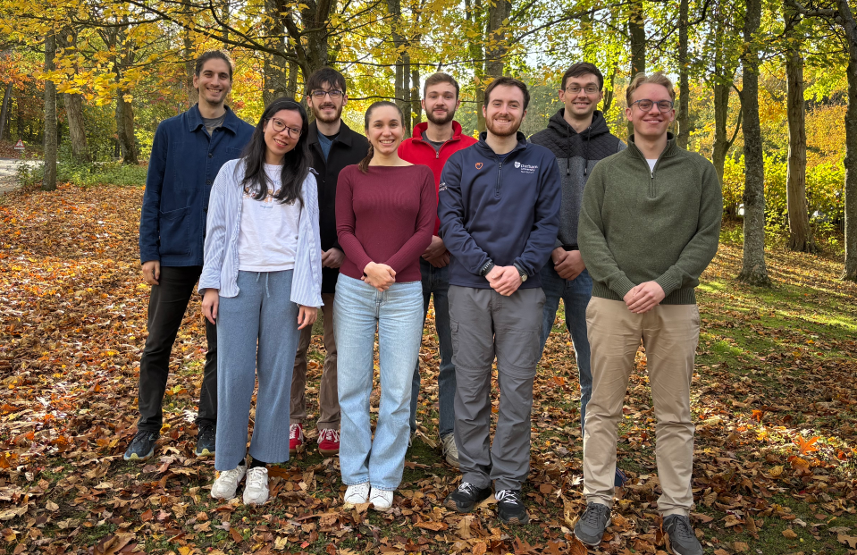

Predictive Theories of Liquids at Interfaces
We develop theories of liquids that connect first-principles accuracy to the length and time scales where liquids actually do useful things — confined between surfaces, exchanging particles with a reservoir, and responding to applied fields.
Much of our recent work combines classical density functional theory with machine learning to build models that stay physically interpretable even as they scale up: from ab initio multiscale descriptions of liquids, to understanding how inhomogeneous electric fields can be used to control fluid behaviour, to unpicking what the impedance of an electrolyte actually tells you at a molecular level.
The unifying question is simple: given a liquid's molecular constitution, can we predict—and eventually engineer—how it behaves at an interface?



Meet the team!Interested in joining us? We are always looking for talented and enthusiastic individuals to join the team.